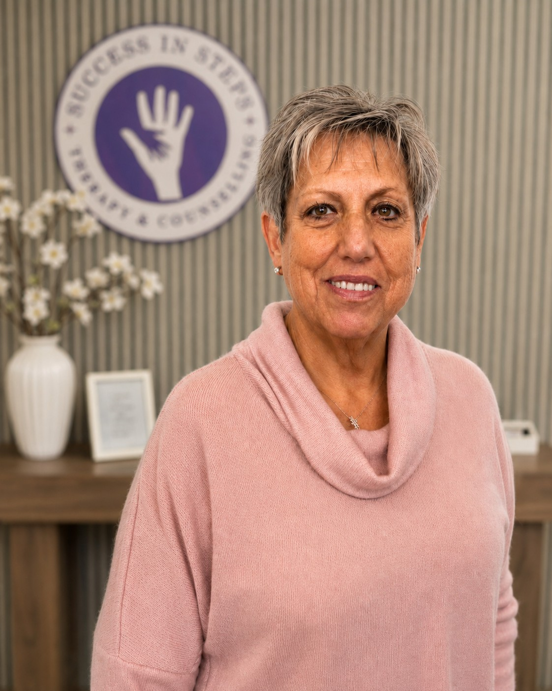
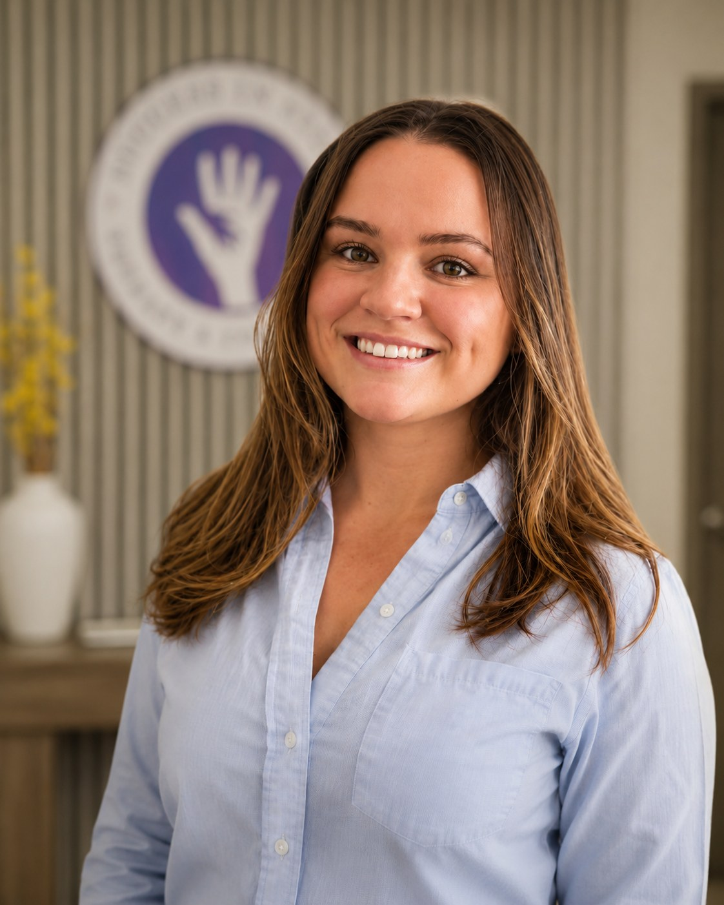
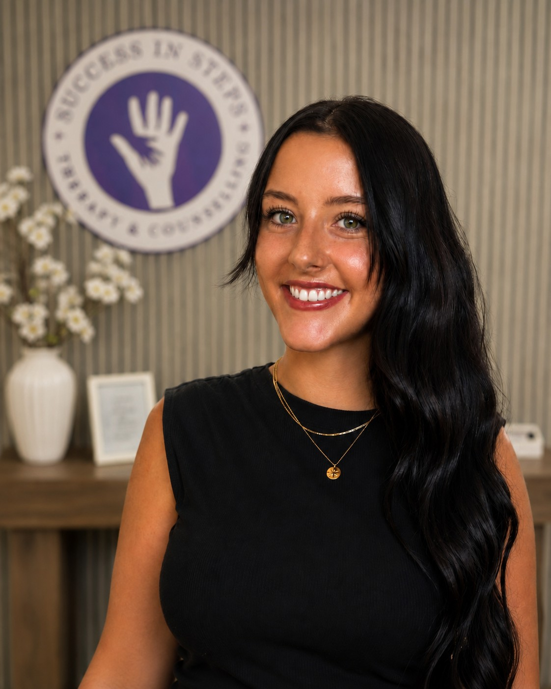
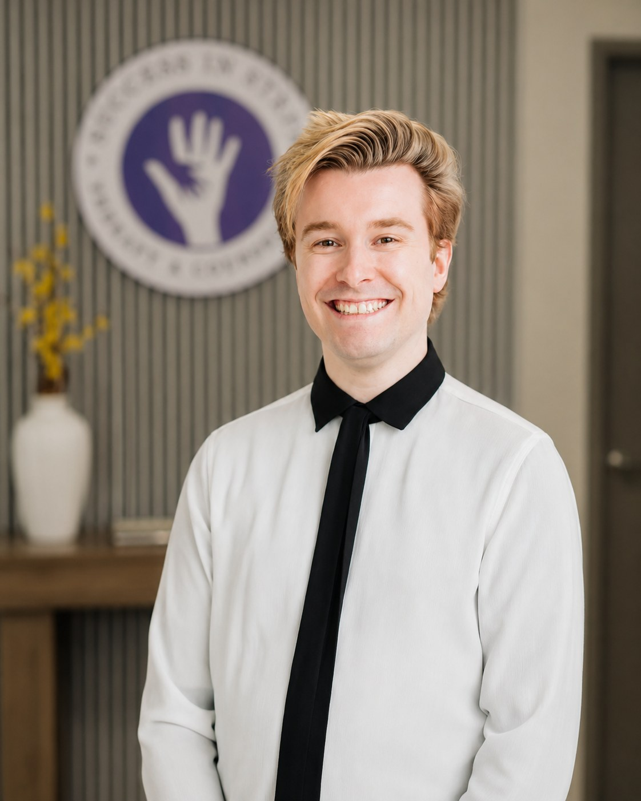

Each of our clinicians brings their own strengths and style, while sharing the same commitment to thoughtful, compassionate care. Browse our team and book directly with the therapist who feels right for you.
Not sure where to start? That's completely normal. Take a moment to read through each clinician's approach and areas of focus. Trust your instincts. The right fit often comes down to a felt sense of connection. If you'd like guidance, Sylvia is happy to help you find your match.
With over 25 years of combined experience as a psychotherapist, parent coach and behaviour therapist, Sylvia guides individuals and families through their challenges toward emotional well-being and personal growth.
Founder of Success in Steps since 2016, she brings both professional depth and genuine personal insight as a parent herself to every client relationship. Her approach is tailored, compassionate, and grounded in evidence-based practice.
Sylvia's warmth and directness create a space where clients feel truly heard, and her sessions balance emotional support with practical, usable strategies.



